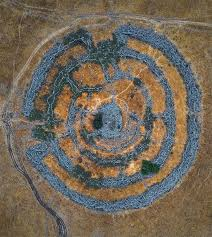
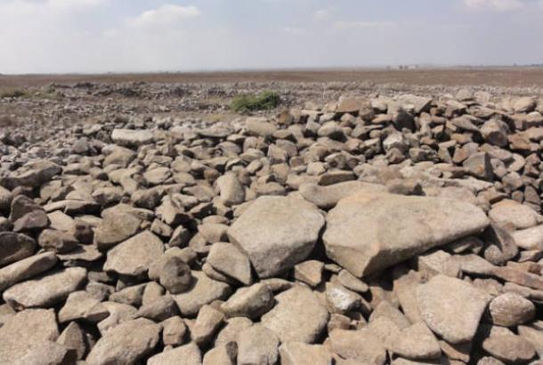
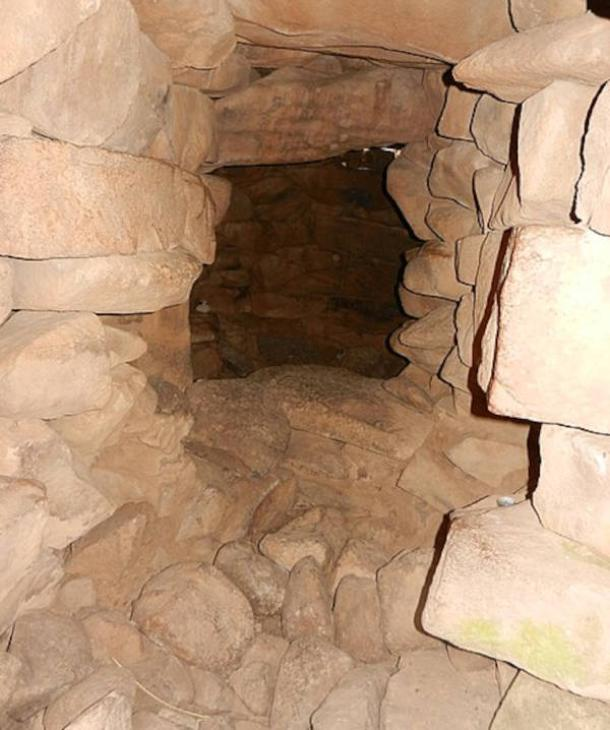

RUJM EL-HIRI

Introduction
Rujm el-Hiri (meaning “”stone heap of the wild cat”), also called Gilgal Refā’īm (meaning “wheel of spirits”), is an ancient megalithic monument, located in the Israeli-occupied region of the Golan Heights.
Research
This incredible Bronze Age stone circle complex in the Golan Heights has captivated scholars for years. Was it a ceremonial site, an astronomical observatory, or perhaps a burial ground? Some even link it to biblical giants known as the Rephaim! Dating back to around 3,000 BCE, its true purpose remains a mystery
Archaeologists dating sediment eolian samples, and the study of pottery sherds excavated in situ, suggest it was constructed either during the Early Bronze Age II around 3000 to 2700 BC, or from the Chalcolithic–Early Bronze Age I between 3880– 3540 BC
Archaeologists and historians have long pondered the true meaning and purpose of the ancient megalithic stone circles built in the Early Bronze Age (3,000 to 2,700 BC) at the Rujm el-Hiri site in the Golan Heights of Israel. Given their uncanny resemblance to other megalithic stone circles found around the world, including Stonehenge, it was natural to conclude (as many experts have) that the concentric circles constructed at Rujm el-Hiri reflected an interest in sacred astronomy, as such building projects did elsewhere.Archaeologists and historians have long pondered the true meaning and purpose of the ancient megalithic stone circles built in the Early Bronze Age (3,000 to 2,700 BC) at the Rujm el-Hiri site in the Golan Heights of Israel. Given their uncanny resemblance to other megalithic stone circles found around the world, including Stonehenge, it was natural to conclude (as many experts have) that the concentric circles constructed at Rujm el-Hiri reflected an interest in sacred astronomy, as such building projects did elsewhere.
But according to new research, this assumption is in error. While other stone monuments do have a connection to the structure and movements of the night sky, it seems that Rujm el-Hiri doesn’t match that familiar pattern.
In a new article appearing in the journal Remote Sensing, a team of experts from Tel Aviv University and Ben-Gurion University make their case that Rujm el-Hiri, the so-called Stonehenge of Israel, has been misidentified as an ancient observatory.
The study was based on calculations of the sky map and aligning the directions of the solstices, equinoxes, and other celestial bodies as they appeared between 2500–3500 BCE, coordinated with the symmetry and entrances of Rujm el-Hiri in its current position,” the research team wrote in their Remote Sensing article, before dropping their bombshell. “The findings show that the entrances and radial walls during that historical period were entirely different, reopening the question of the site's purpose.
The research team, which was led by Dr. Olga Khabarova and Prof. Lev Eppelbaum of the Department of Geophysics at Tel Aviv University and Dr. Michal Birkenfeld of the Department of Archaeology at Ben-Gurion University, analyzed satellite data collected over multiple years to track the miniscule movements of the ground in the Golan Heights region, which remains an ongoing process. Correlating this information with data obtained from geomagnetic analysis and the reconstruction of past tectonic movements, they were able to calculate that the ground in the Rujm el-Hiri area of the Golan Heights has been moving at an average rate of 8-15 millimeters per year for a long time, carrying the stones on top of it along for the ride.
It is known that several Early Bronze Age settlements were built within walking distance of the megalithic structure. Using remote sensing technology, the researchers were able to survey a broad area around Rujm el-Hiri, and they discovered the ruins of ancient buildings, walls and burial mounds within an 18-mile (30-kilometer) radius of the site.
While rejecting the idea that Rujm el-Hiri was an astronomical observatory or solar calendar, the researchers do note similarities between this monument and similar structures in the Mediterranean area that were also built during the Early Bronze Age
Description

The previous belief was that the walls and entrances to the set of concentric stone circles installed in the Golan Heights 5,000 years ago were specifically aligned to match the positions and/or movements of certain objects in the night sky (the Sun, the Moon, the stars, the planets, etc).
The four concentric circles and the central rock mound burial chamber (tumulus) that comprise the monument were constructed from more than 42,000 basalt rocks. At its widest point the entire structure is 520 feet (160 meters) in diameter. The highest wall reaches a height of eight feet (2.4 meters), while the tumulus in the middle is 15 feet (4.6 meters) tall.
